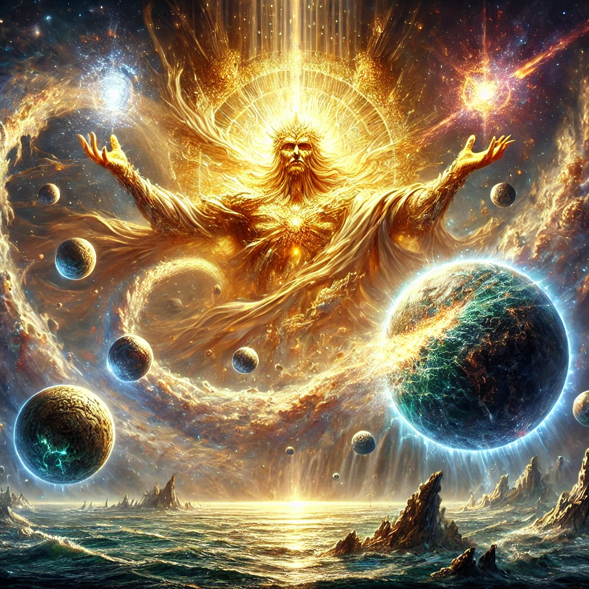

The World of the Azrothi
The Setting
The known realms are built upon the ruins of an age-old world called Naemor, broken apart at the end of creation and scattered like embers into the stars. These fragments now drift as habitable spheres, each touched by different metaphysical forces:
- Sund-Naemor – the material realm of mortals
- Ichorheim – the divine plane of order and light
- Eosannwn – the unseen world of spirit, memory, and dream
- Rahab-Iehalan – the formless Deep, source of chaos and unmaking
Across these realms, myths live, gods are forgotten, and power is more than mere magic—it is law, wish, belief, and devotion.
Mythos
At the heart of this universe stands the Azrothi Order: an ancient brotherhood of entropy-hunters, oathbound warriors, and living myths. Feared as monsters and revered as saints, the Azrothi are humanity’s last line of defense against horrors that whisper from the Deep Below—Rahab-Iehalan.
The Oathyrean Lords
Before the sundering of Naemor, godlike beings known as the Oathyrean Lords shaped creation. They governed divine domains—order, time, thought, war, oceans, stars—and forged the laws that underpin reality. Now, they are silent or lost, and their remnants—artifacts, beasts, rituals—remain scattered across the spheres.
Factions
The Azrothi
A disciplined and feared order of Spellbreakers. Grafted with divine essence, they walk the line between guardian and horror—charged with destroying what seeps in from the Deep.
The Attarans
War-worshipping conquerors from the rogue world Attaros, bound by Ulven Law. Their eight lunar houses war endlessly, wielding ancient power and remembering every grudge.
The Thrain
Descendants of the Itatrien Knights, born from divine and dragon blood. Once leaders of a peace-bringing empire, they now live in scattered exile.
Imperius Menthama
A telepathic empire forged from forgotten colonies and sustained by the corpse of a fallen god. Cold, efficient, and ascendant.
The Umi
Not a faction, but entropy incarnate. Manifested as forces like Madness, Secrets, and Self-Loathing. When an Umi takes form, a world dies.
The Spell
The Spell is the foundational force of existence—threaded through matter, mind, and meaning. But it obeys no single system. Instead, mortals wield it through five structured philosophies, known as the Five Higher Powers:
- Axiomancy – Structured magic: logic, ritual, sacrifice
- Thaemoric Power – Wishes made real, always paid in kind
- Ulven Law – The power of Taking, dominion through binding
- Fal – Collective belief made real
- Emanance – Becoming through imitation of higher beings
Every Spell-user walks a different path. The Azrothi walk all five—and survive because of it.
Begin the Journey
The story follows Damon Ursong, a castaway of fate and legacy. Born to a ruined house, twisted by betrayal, and marked by powers he cannot yet understand, he is pulled from the edge of the Deep and forced to become what he once feared—an Azrothi.
“This is a tale of myth and memory, of light cracking through ruin, and of men who choose to stand where even gods once fled.”
Additional Content
If you’re interested in media, story, and art, check out my YouTube analyses:
Want more inspiration? Explore this family tree of ancient mythology by Brian Moore: